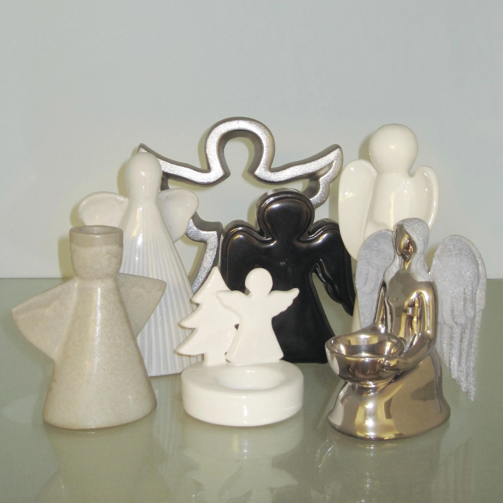

Album#43
天使音乐 (Hint Notes)

专辑信息
- 专辑名称： 天使音乐 (Hint Notes)
- 歌手： 汪川
- 年份： 2026-05-21
- 风格： 华語獨立、独立舞曲、室内乐
- 时长： 約 40 分鐘

《天使音乐 Hint Notes》是我的第一张全长专辑，收录 15 首歌曲。
一个人待着的时候，偶尔会在嘈杂的大街、静谧的夜晚，甚至梦里，捕获一些暗藏的音乐流。去年夏天开始，这些美妙的音乐流来得特别频繁，像天使一样降临在我的身上，这是「天使音乐」和「Hint Notes」这两个词的由来。今年春天，我与何弦共同完成了这张专辑，歌曲主要关于人和人的关系以及我自己的一些事情。 enjoy ( ᓀ◞ᓂ..)
這張専輯最近聴的蠻多的，整體給我的感覺是柔和的，有的歌是可愛的，有的則古灵精怪，有的在講一個故事，有的在啍一首搖蓝曲。歌里或許有一些小小的憂鬱，但整體來說是温暖的，不顯悲傷。整張専輯聴起來像是打開了一本色彩斑斕的故事書，像是走進了一個温馨、可愛、熱閙的小劇場。
専輯的編曲聴起來很丰富，也很耐聴，里面有很多細節，也有不少采樣，汪川也說里面有埋了許多彩蛋。丰富的編曲不會給人一種凌亂的感覺，也不會喧宾夺主掩盖了汪川的聲音，編曲和人聲是相得益彰的。汪川的人聲也很出彩，聴起來很干净也很多樣，在不同曲子里能聴出很不一樣的人聲，有時也顯得可愛。
専輯封面也還不錯，最後的那個鐵製的天使看起來蠻突出的，和其他天使都不一樣，像是降临下來的一般。
關於天使音樂，在 专访｜汪川和她的天使音乐 里有可以了解更多信息，我也做了一些摘录󠄃 (很長哦)。
摘录
SV：什么样的音乐会让你给出“天使音乐”的评价？在整合、面对自己的 demo 的时候，“天使音乐”的评价标准也和听歌的时候一样吗？你是怎样筛选的？
汪川：是拜金小姐的《拜金小姐》。封面完美1；歌名完美，看到这些短语就已经荡漾了：《小鸟探戈》《清晨音乐》《一种简单的辉煌》《那感觉是微风》《写给这个下午》；李端娴的编曲，完美。
后来看到一个她们 2001 年的演出视频，两个女人站在舞台上，一个带着海军帽，一个带着牛仔帽，戴着金色假发，观众席里漂浮着彩色气球，我幻想自己演出的场景可能就是这样。这张专辑让我产生了作为创作者的渴望，让我也想做出这样的音乐、做这样的演出。当然也很有多专辑给我这样的感受，这张让我第一次写出了“天使音乐”这个词汇。
天使音乐是一种感觉，如果用形容词概括，那就是微观的、真实的、风一样的吧。这个不是 demo 阶段的评判标准，是在制作的最后一刻需要完成的目标。挑选 demo 我只考虑旋律好听、结构相对完整这两点。然后在制作过程中，按照目标去填写我认为的微观视角的歌词；在编曲上，用我当前审美的来自上世纪 90 年代 - 10 年代的合成器音色， sine lead、organ、mellow bells 之类的；最后做整合梳理和排曲目，我会考虑整张专辑的连续听感，每首歌的桥段关系、哪些是大歌、哪些是小歌、主要器乐是什么、速度多少。希望听众听着耳朵不累，可以连续聆听。
最后有一个 trick，我在听自己喜欢的歌时会偶尔切到自己的歌，如果不破坏上一首留下来的氛围，那么这首就合格了。
SV：“hint notes”意味着音乐灵感“从天而降”吗？对于这些美妙的时刻，你可否举出一两个具体的生活场景？
汪川： 从天而降听起来像神启和神迹，有点自大（虽然有几个瞬间我就这么觉得过），应该是平时的收集在某个时刻以具象的方式出现并且让我记住。
场景:
有天午睡做了一个梦，梦是这样的。
这一天
今天一直在错过。
住在外婆外公家，清晨时候窗外传来美妙的尼龙吉他的声音，还有女人和小孩的歌声。原来是流浪乐团，但是听 30 秒要收费 25 块。我在赖床，所以没有看到他们。听说今晚后山有演出，大家纷纷起身往那边走。经过一片下坡，傍晚的、深绿色的、有雾气的、有高高低低的树木的、挂着彩灯的，一个缓坡。大家穿着五颜六色的衣服往下走，感觉在奔赴一场盛宴。我觉得太美了，想拍下来，所以转身回去拿相机。到了门口才发现相机就在口袋里，但是人群已经走远了。赶到后山，我径直走进了演艺人员的帐篷，大家穿着白色的羽毛裙。有人在练声，有人在复习舞蹈动作，这个节目一定很精彩。意想不到的是，我居然遇到了认识的歌手，不是那么熟，我们打了一个招呼。女孩们反复练声的那句实在太好听了，我也哼唱起来。但是我没看上那场演出，因为我醒了。但是那句旋律我记在备忘录里了。
最后这个旋律用在了《晚餐见》副歌前的 interlude，2:04-2:11 的 9 颗音。午睡时做的都是美梦，这也是《午睡曲》的歌词由来。
某天在听我很喜欢的一首歌，杭州一个很早的乐队：树乐队的《Run to Sunshine》 (生命音乐之一)，突然在后半段听到了以往从未听到过的合成器音符，觉得很奇妙。
做《AKAI!》的时候，我跟何弦说这个过门应该再加一轨 pad，加强那三颗音符。他问哪里有这三颗音，我们检查了所有旋律轨道都没有。我说我明明听到了，他说也许说这些轨道叠在一起撞出来的频率被我听到了。然后我们确实加了一轨，但我现在再去听就听不到了，很幽微的句子（看起来好像有点诡异）
有一天晚上听到空气中持续飘着一层 pad，不知道为什么，类似 organ 的音色。没什么旋律，但那个氛围我记住了（也有可能是耳鸣）。
有天在做歌，发现一轨不和谐的声音，停下检查发现是外面呼啸的风跟我的歌不是一个调，太好笑了。我还以为是某轨弦乐，当时纳闷自己不会犯这种低级错误。但风可以当弦乐这件事我记住了。
有一次饿的时候，肚子发出一声咕噜声，那个声音像那鸟鸣又像水滴，它有固定的音调和时值，很美妙的存在，绝不是一般的咕噜声。后来又听到过几回，但没能录下来，但我们在《永恒八月》里做了类似的音色。
在做一首歌的时候，我脑子里会浮现 2-3 首其他的歌曲，《秋千》的采样香料的《绿+橙》，《永恒八月》的采样德彪西的《月光》以及 Spank Happy 的《トラベルロリータ》，《午睡曲》的采样勃拉姆斯的《摇篮曲》就是这么来的。以及，我在另外几首歌里都加入了一些我非常喜欢的歌曲的最爱的几颗音的排列组合，希望大家可以找出来。
我通通叫它们 hint notes。
SV：去年或者是更早之前，你对自己第一张个人专辑的设想是怎样的？
汪川：有三个目标：
- 歌词让人一眼就能看懂在写什么，一个词一句话就能概括;
- 大多数人听完会评价好听;
- 五十年后还有人听。
内容部分，我在去年 2 月份创建了一个文件夹“忧伤‘流星音乐”（流行打错了），感觉“忧伤”这个词确实是我的文字创作的一大主题，写出来的旋律好像也有点忧伤。
具体内容没有做过多设想，做到哪算哪。不过目前专辑呈现出来的样子比我想象中柔和很多，我原本觉得自己永远不会写有关爱情的歌，以及可能会用更多的电子音色，但这次原声器乐（虽然大多数都是 MIDI）占了很大比重。这几年经历过一些事情之后，发现自己已经从只能用隐喻表达的人变为可以直白地说话的人了，所以平时说的很具体、很细碎的话就变成了歌词。
SV：如专辑介绍所说，15 首歌里哪些是向外的（人与人的关系）？哪些又是向内的（关于自己的）？
汪川：
人和人的关系：
爱情：《秋千》《永恒八月》《谋杀三章》《你好你好》《恐龙形状的物体》《晚餐见》（苍天啊，真没想到我会写这么多这个题材的……到年纪了。以及有个惊人的发现，这些歌都是第二人称，那么你就得相信这些都是真实发生过的）；
社交：《明天的脸庞》；
一切情：《风筝挽歌》。
关于自己的：
《关于家的一切》（我上海的家）；《AKAI!》（我的第一台 MIDI 键盘）；《你得告诉我》（我生命中最重要的事“求知”）；《午睡曲》（我的创作）。
SV：三支短暂的“小节目”在专辑里的作用是怎样的？听上去像一些儿童音乐夹杂在一些流行 tune 之间？
汪川：分割世界的桥（不是）。
从功能上：喜欢有短短 intro 的专辑，感觉是准备了一张舒服的床让人可以躺着听，所以有了一首《小节目1》；歌曲数量确实超过标准专辑的数量，《小节目2》就是让人耳朵休息的，包括上一首《你好你好》也是，简单的构成；《小节目3》的话，我想把人们从《风筝挽歌》的忧伤情绪里拉出来。这个段落原来在《AKAI!》里，但那首段落有点太多了，挪出来单独用正好。
从内容上：听起来有点像游戏原声带，虽然我自己不怎么玩游戏，但觉得很多游戏配乐都非常好听，非常有沉浸感。在游戏文化中，一个乐句对应某个关卡场景，有点以音乐为时间轴生活的感觉，这让我很迷恋。推荐菅野洋子为《Napple Tale》做的《Napple Tale 妖精図鑑》。
我很满意这三首歌的标题，想出来之后持续得意了一整天。
SV：这 15 首歌可以概括你最近一段时间的心境吗？为什么听上去感觉大体都还比较轻松？
汪川：完全，淡淡的忧伤，虽然好像一直以来都是这样的人。轻松可能是一切都已经回到我自己的秩序里了吧。痛苦和悲伤都已经关在歌词里了，我轻轻地唱出来。
GEZAN 的主唱 Mahito 的个人计划有首歌《沈黙の次に美しい朝》，歌词很美：“一个春天的清晨，门前站着一个恶魔，他说，『把你的清晨给我吧，我会给你音乐作为交换』, 我把清晨献给了恶魔，恶魔将它吃掉，我今天将音乐放进口袋。”看到之后我说我也愿意跟恶魔做交易，只要给我更好的音乐，凌晨、正午和夜晚都可以拿去。那些人和人之间的关系带来的痛苦和悲伤，重来一次我还是想要经历，只要能用他们做出好音乐。
另外也推薦看看 专访汪川｜怎么才上半年就确定了她是今年的年度新人？！ 。
如果你喜歡這張専輯，也許你也喜歡：
- Album#4 - Town (聲音上會有些像)
- Album#24 - 无尽的夏天 (編曲上會比較像，也很耐聴)
- Album#39 - 海马森林 (SEAHORSE FOREST) (編曲和旋律超贊)
TRACKLIST
小节目 1
(一个人和一群人)
(唱着走调的心声)
(偶尔错拍的舞步)
(让我们紧紧相拥)
好聴的 intro，有些詼諧，聴著是不是有些像是馬戏团、小劇場之類的音樂？到後面旋律越來越快，像是迫不及待要開始下一首歌的樣子。
秋千
所有表达里
最讨厌 转折句
“但是”、“然而”
还有“该怎么办呢”
短短破折号
却长长的犹豫
夹带些懦弱
和许多的揣测
可是你来来回回重复地说了好几遍
我甚至有点嫉妒可以这样说话的你
另一个人的心开始上上下下荡秋千
梦里梦外摇摇晃晃直到你说停下来
所有表达里
不可能出现的
某个名词
某种特定的语气
甜蜜和黏腻
死在欲言又止
还有更多的
也可能会死去
可是你来来回回重复地说了好几遍
我甚至有点嫉妒可以这样说话的你
另一个人的心开始上上下下荡秋千
梦里梦外摇摇晃晃直到你说停下来
说出口
会怎样呢
说出口
顶多就是摔个跟头
说出那句人类都爱听的
这样的话
爱的恨的
让秋千重新变回玩乐
This time
It’s time to go
Swing the heart
and cry
This time
It’s time to go
Swing the heart
and laugh
This time
It’s time to go
Swing the heart
and cry
This time
It’s time to go
Swing the heart
and laugh
編曲好聴，里面很多音效都好有趣，有點可愛，有點古灵精怪。
另一个人的心开始上上下下荡秋千
梦里梦外摇摇晃晃直到你说停下来
在對方給出回復前，心就像是搖晃不止的秋千停不下來，很好地捕获到了等待時那種期待、紧張、焦急、害怕等一系列感覺。
说出口会怎样呢说出口顶多就是摔个跟头
這不就是表白前的心理活動嗎，害怕、糾結，欲言又止。說出口顶多就是摔个跟头，但不說出來，對方是不會知道的，就什麼可能都沒有了。
秋千的 MV 也很有趣，記得去看看！
关于家的一切
心
它跟随这里的呼吸
昼夜不停地长
每天醒来
发觉身上的自己
比昨天多了一些
瀑布作墙 遮住外头的闹
薄雾作窗 地板上面泛着光
一枚春天 就歇在那屋顶上
风吹进来 带走片刻忧伤
雨落下来 孤独们都被滋养
只要歌唱 虫和鸟都奏乐章
在这里
完成生命需要经历的所有冒险
每滴眼泪
凝结成为珍贵的胚胎埋种在心间
我
饮下灰尘共舞的酒
在这样的午后
观察这里
是如何吹响
能让万物复苏的号角
瀑布作墙 遮住外头的闹
薄雾作窗 地板上面泛着光
一枚春天 就歇在那屋顶上
风吹进来 带走片刻忧伤
雨落下来 孤独们都被滋养
只要歌唱 虫和鸟都奏乐章
舒展 时间不限量
安放 灵魂它无限大
家像母体一般托住我
容忍我的随心所欲偶尔疯狂
播放关于未来的想象
想象中一切都清晰又明亮
告诉我该如何歌颂它
我只能用这样一首歌
还有接下来的呐喊
SV：《关于家的一切》的描写对象是“家庭”还是实体的居所？对你来说，家让你有着怎样的感觉？
汪川：实体的居所，是我在上海的家。几年前在北京生活，生理和心理都相当痛苦，搬回南方之后一切问题都解决了（不过之后再去北京，作为游客身心舒畅，挺好的一个城市）。
这个家对我来说可能是避难所、子宫、我的整个世界，就像歌词里说的：“在这里，完成生命需要经历的所有冒险；每滴眼泪，凝结成为珍贵的胚胎埋种在心间”。有次短暂停电，恢复电力后，家里的电器开机的声音此起彼伏响地起来，这就是歌词里“让万物复苏的号角”。
之前在微博写过一段话：喜欢大写的 HOME，看起来稳当，恒定。词性是名词、动词、副词、形容词。释义是家、是巢、是首页、是正确。静气凝神，容纳万千。家就是这样。
专访｜汪川和她的天使音乐 by 街聲
這首的人聲和秋千的挺不一樣的，好聴。
這是一首對家的歌頌，家就像是避难所、子宫，給人足够的安全感，可以暂時拋下一切，什麼都不管。
不禁又想起辛波斯卡的詩 ⸺ 回家：
他回家。一语不发。
显然发生了不愉快的事情。
他和衣躺下。
把头蒙在毯子底下。
双膝蜷缩。
他四十上下，但此刻不是。
他活着 ⸺ 却彷佛回到深达七层的
母亲腹中，回到护卫他的黑暗里。
明天他有场演讲，谈总星系
太空航行学中的体内平衡。
而现在他蜷着身子，睡着了。
永恒八月
Drive your car down to the sea
All the while you build a scheme
Take her hand and walk on with her
Make it real your Summer dream
歌詞大意
开着你的车去海边
你一直都在计划著
牵着她的手一起走
使你的夏日之梦成真
SV：《永恒八月》是即兴而成的 vocal 吗？这个八月发生了什么？
汪川： 是，vocal 就是 demo 人声。有次在朋友家改编曲，觉得会有更好的旋律，就用他的设备在他的卧室里尝试重写。这些人声录得很快，大概用了一个小时，后续无论用什么语言的歌词唱都不流畅，所以就放弃了重填歌词和重新录制，直接用了这些人声素材。其实可以听到人声里有蛮多噪音，去噪是最大的工作量。
那个八月的某天，我第一次和一个人单独待在一块儿，这个人后来对我影响非常大，塑造了我在 20 岁出头的时候的一切观念。不过，现在我是靠自己在塑造了，而且颠覆了很多那个时候他塑造的东西。
专访｜汪川和她的天使音乐 by 街聲
有一次饿的时候，肚子发出一声咕噜声，那个声音像那鸟鸣又像水滴，它有固定的音调和时值，很美妙的存在，绝不是一般的咕噜声。后来又听到过几回，但没能录下来，但我们在《永恒八月》里做了类似的音色。
专访｜汪川和她的天使音乐 by 街聲
這首采样了 Spank Happy 的《トラベルロリータ》和德彪西的《月光》(Clair De Lune)，似乎是小林武史弹奏的版本。
歌詞出自 The Beach Boys 的 Your Summer Dream 。
明天的脸庞
没太多选择
又只能一个人走着
穿过漫长清晨
和黄昏
迎面而来的人群
由身侧经过
旋转 追逐
而后化作乌有
对另一个人的幻想
揉扁又展开
透过他们的
身体晃动幅度
可以猜测
大多数的心是空的
随时可能会飘走的
成千上万种2
经过你
而你此刻
只想哼一首喜欢的歌
歌声里哭
然后笑
没太多选择
又只能一个人走着
穿过身体的风
几万种
迎面而来的眼神
由身侧经过
流转 附着
而后化作乌有
这个世界上
许多许多
明亮闪烁的星
轻而易举
照亮生命的某一侧
却会在未来某一刻 跌落
成千上万种
经过你
而你此刻
只想哼一首喜欢的歌
歌声里哭
趁现在天色还未亮
奔跑起来
跑过那条熟悉的街
你的忧愁
你的挥霍
散落一地
像天上星辰
像月亮
像明天的脸庞
旋律沒那麼歡快和明亮，有點憂傷的一首。
最後的旋律感覺也是某首歌的采樣，但不知道是哪首。開頭和結尾的鼓點聴著像是心跳，奔跑起来心臟跳動的聲音。
谋杀三章
(Chapter 1: kinky)
Must be hidden in there
Must be out of mind
Must be hidden in there
Must be out of mind
Must be out of mind
Must be out of mind
I'll still be
I'll still be
Standing there
I'm waiting for you
Standing there
Who are you waiting for?
I don't know
I want to figure out
I want to dig it out from the grave
I want to dig it into the grave
I want to dig it out from your grave
(Chapter 2: Kill (deep drunk singing))
Dig it out
Dig it out Dig it out Dig it out
Dig it out Dig it out Dig it out
Dig it out Dig it out Dig it out
Dig it out Dig it out Dig it out
Dig it out
(Chapter 3: kiss)
Young and beautiful lover boy
You gonna miss these days
To get it high
No no no no
Stop saying that
I'll be always dreaming about you
Remember the days
Remember the days
Remember the days
Now I set you free
May you rest in peace
歌詞大意
[第一章：變態/古怪]
一定藏在裡面
一定不在意了
一定藏在裡面
一定不在意了
一定不在意了
一定不在意了
我依然會
我依然會
站在那裡
我在等你
站在那裡
你在等誰？
我不知道
我想弄明白
我想把它從墳墓裡挖出來
我想把它埋進墳墓裡
我想把它從你的墳墓裡挖出來
[第二章：殺戮（醉酒深情吟唱）]
挖出來
挖出來 挖出來 挖出來
挖出來 挖出來 挖出來
挖出來 挖出來 挖出來
挖出來 挖出來 挖出來
挖出來
[第三章：吻]
年輕帥氣的情人男孩
你會懷念這些日子的
去達到高潮
不 不 不 不
別再那樣說了
我會一直夢見你
記住那些日子
記住那些日子
記住那些日子
現在我讓你自由了
願你安息
《谋杀三章》在旋律写作的时候没有重复的段落，但有三个明显的人物心理分界，对应 kinky（奇想）、kill（谋杀）、kiss（亲吻），取这个名字可能是有些抽象的，主要是帅。
有種病嬌的感覺，又是很不一樣的人聲。
你好你好
发呆
在你经过的
那团空气里
持续发着呆
执着的视线
在你身体里
好奇地探索
舍不得移开
我最想知道
你为何哭
又因什么而笑
会被什么人所打动
告诉我
昨天发生什么
今天心情如何
明天是否依旧呢
请你
做一只幽灵
在这首歌里
永恒地游荡
说不定下次
轮到你紧紧
盯住我眼睛
还有我的心
像是一首舞曲，聴著有點憂傷，簡單的編曲构成，汪川說是讓大家的耳朵休息一下，也太貼心了。
評論區看到有人說旋律像椎名林檎的 ポルターガイスト，聴了聴，確實有點像。
小节目 2
（暗藏在空气中的美妙音符）
中場休息，让耳朵休息一下。
AKAI!
ARPEGGIATOR
ON/OFF
TAP TEMPO
OCTAVE
OCTAVE
FULL LEVEL
NOTE REPEAT
NOTE REPEAT
It's AKAI PROFESSIONAL
MPK mini
It's AKAI PROFESSIONAL
MPK mini
ARPEGGIATOR
ON/OFF
TAP TEMPO
OCTAVE
OCTAVE
FULL LEVEL
NOTE REPEAT
AKAI PROFESSIONAL
MPK mini
ARPEGGIATOR (ARPEGGI ARPEGGI ARPEGGI ARPEGGI ARPEGGI ARPEGGI ARPEGGI)
ON/OFF (～～～)
TAP TEMPO (1 2 3 4)
OCTAVE (O O C C T T A A V V E E)
OCTAVE (ah ah ah ah)
FULL LEVEL (ah ah ah ah)
NOTE REPEAT (ah ah ah ah)
NOTE REPEAT
AKAI PROFESSIONAL
MPK mini
AKAI PROFESSIONAL
MPK mini
SWING 50%
SWING 55%
SWING 57%
SWING 59%
SWING 50%
SWING 55%
SWING 57%
SWING 59%
SWING～～
Akai 是汪川的第一台 MIDI 键盘，歌詞唱的是 Akai 上的一些操作，是一段对于 MIDI 键盘产品信息的阅读，但汪川唱出來還蠻有趣的。編曲丰富，人聲也很棒，讓人享受。
你得告诉我
你得告诉我
什么是什么是
最正确的选择
你得
你得告诉我
什么是什么是
挑选的规则
这是大还是小 不知道
这是坏还是好 不知道
该如何做才能都知道
这世界上所有的奥妙
你得告诉我
什么是什么是
足够用的透彻
你得告诉我
什么是什么是
最纯粹和最快乐
这是大还是小 不知道
这是坏还是好 不知道
该如何做才能都知道
这世界上所有的奥妙
我生命中最重要的事“求知”。
人聲很棒！
恐龙形状的物体
可能就没有明天啦
恐龙形状的物体
什么时候会出现？
我在等
快些来
可能就没有明天啦
恐龙形状的物体
什么时候会出现？
我在等
快些来
可能就没有明天啦
我给你讲个故事吧
从前有只恐龙
生活在一万亿年以前
那个时候人类在做什么呢？
你在做什么呢？
在呼吸吗？
在听音乐吗？在看星星吗？
说回恐龙
他担心有一天世界末日会到来
所以一直在找跟他一样形状的物体
确实找到了很多
有一把牙刷 一辆玩具车
一只乌龟 一只青蛙
还有一位跟他长得很像的女孩恐龙
他们的嘴巴一模一样
同样因为担心世界末日而寻找
所以他们都不再找了
觉得有彼此就够了
最后他们结婚了
直到整个物种灭亡
放的婚礼进行曲也是这首
嘟嘟嘟嘟
嘟嘟嘟嘟
嘟嘟嘟嘟嘟嘟嘟嘟嘟嘟
嗯
这个故事就是这样
《恐龙形状的物体》，当时的生活中出现了很多我觉得是恐龙但其实不是恐龙的东西，比如我的牙刷，其实是海马；那个玩具车，不知道是什么；乌龟是马里奥里的耀西，青蛙是棉花小兔里的凯利。作为人类，拥有有限的生命，有时渴望找到与自己高度相似的生命体，共享同一份记忆，继承彼此的意志。有时甚至会错把不那么相像的人看成跟自己一样的人。
专访｜汪川和她的天使音乐 by 街聲
《恐龙形状的物体》是在一位朋友陈方舟的录音棚里录的，但我们用的不是录音室，是外面那个层高很高的会客厅。我当时希望录出，耳机里听起来好像“有个人在房间里走来走去唱歌的感觉”。编曲完成之后，麦克风收录我的人声以及音箱播放的伴奏。最后在 DAW 里把这个音轨叠到伴奏上。我称之为 “half one take”。
专访｜汪川和她的天使音乐 by 街聲
很喜歡的一首，可愛，還有 MV 哦，喜歡里面的舒緩温柔的吉他，其他器樂的聲音也好聴。講故事時吉他的旋律好熟悉，但想不起來是什麼曲子。
如果你喜歡聴這樣的故事，再分享你兩個：
- 床边故事 by 四枝筆 Four Pens
- 黑洞里 (live) by 方大同
午睡曲
Sleep on this bed
Tripping on the burning noon
Visions filling out
Please set me free
All I want is about to start
Hoping dreams will find me a way
While playing the chord
You can also take the melody from dreams
While playing the chord
You can also play the high b on the stream
While playing the chord
You can also take the melody from dreams
While playing the chord
You can also play the high b on the stream
While playing the chord
You can also take the melody from dreams
While playing the chord
You can also play the high b on the stream
This is true
You were mine
And I know
You will drift away
In my mind
Drift away
Sleep on this bed
Tripping on the burning noon
Visions filling out
歌詞大意
躺在這張床上
在灼熱的正午中幻遊
幻象不斷充盈
請讓我解脫
我所渴望的一切即將展開
期待夢境能為我指引出路
撥弄和弦之際
你亦能從夢中擷取旋律
撥弄和弦之際
你亦能在溪流中奏響高音 B
撥弄和弦之際
你亦能從夢中擷取旋律
撥弄和弦之際
你亦能在溪流中奏響高音 B
撥弄和弦之際
你亦能從夢中擷取旋律
撥弄和弦之際
你亦能在溪流中奏響高音 B
這是真的
你曾屬於我
而我知道
你會漸行漸遠
在我的腦海裡
漸行漸遠
躺在這張床上
在灼熱的正午中幻遊
幻象不斷充盈
適合聴著午睡，也很適合作為搖篮曲。
采樣了 Johannes Brahms 的搖篮曲 (Wiegenlied, Op.49, No.4)。
晚餐见
Sometimes pain
Walks on and passes by my side
Come and hug me honey
It's brutal at night
And your smile
From every moment
It's all I wish for midsummer
In fleeting July
Someone stays
While other ones never waits
People change their minds
When the day is almost all done
And your smile
From every moment
It's all I wish for midsummer
In fleeting July
'Cause I can't send my eyes
To decorate your dream
'Cause I can't heal so fast
To gather my tears
'Cause I won't let you go
Get upon my wings
And who says maybe
I can run so fast for a supper meet
Run Run Run
For a supper meet
Run Run Run
For a supper meet
Run Run Run
For a supper meet
Run Run Run
For a supper meet
歌詞大意
有時痛苦
就這樣與我擦肩而過
親愛的，來擁抱我吧
夜晚總是如此難熬
而妳那
每一刻的微笑
就是我仲夏所有的期盼
在轉瞬即逝的七月
有人選擇留下
有人從不等待
當一天將盡
人們總會改變心意
而妳那
每一刻的微笑
就是我仲夏所有的期盼
在轉瞬即逝的七月
因為我無法投射我的目光
去點綴妳的夢境
因為我無法痊癒得那麼快
去收起我的淚水
因為我不會放妳走
乘上我的雙翼吧
誰說不可以呢
我也能為了晚餐聚會飛奔而去
奔跑，奔跑，奔跑
為了那場晚餐聚會
奔跑，奔跑，奔跑
為了那場晚餐聚會
奔跑，奔跑，奔跑
為了那場晚餐聚會
奔跑，奔跑，奔跑
為了那場晚餐聚會
唱完「I can run so fast for a supper meet」後的間奏，就像是在奔跑中，奮不顧身向對方飛奔而去。
风筝挽歌
别哭啦
未说完的话
昨日般喑哑
飘在空中
拖着长长深深沉沉的过往
Like a blue kite
起飞啦 (飞起来只管飞起来)
无需再回答 (剩下的让它待在那儿)
埋在太阳下
碎在风中
或许某天跌落回到我手掌
Where to fly
By my side
Going wild
On my mind
New spirit
New life
New us
要飞去哪儿？
飞去大天地
要落在哪儿？
落在崭新里
今夜还很长
慢些飞
慢些落
在唱完「Going wild」後能聴到「叮」的一聲，是風筝的綫斷了。
小节目 3
（玩耍中天使降临在游乐园）
和開頭小节目 1 呼應。中間管風琴的聲音，聴起來就像是天使降临了。

{kind=link}